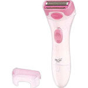

返回列表
产品名称：テスコム レディシェーバー LD400P

テスコム テスコム レディシェーバー LD400P ＬＤ４００ Ｐ
メーカー テスコム
JANコード 4975302540010
商品の特徴
肌にやさしいソフトヘッド、ワイド刃で一気に剃れます！
お風呂で使えて、本体丸ごと水洗いＯＫです。
成分・分量
用法及び用量
電源プラグをコンセントに差し込みます。
使用後は、切替スイッチを「OFF」にし、電源プラグをコンセントから抜きます。